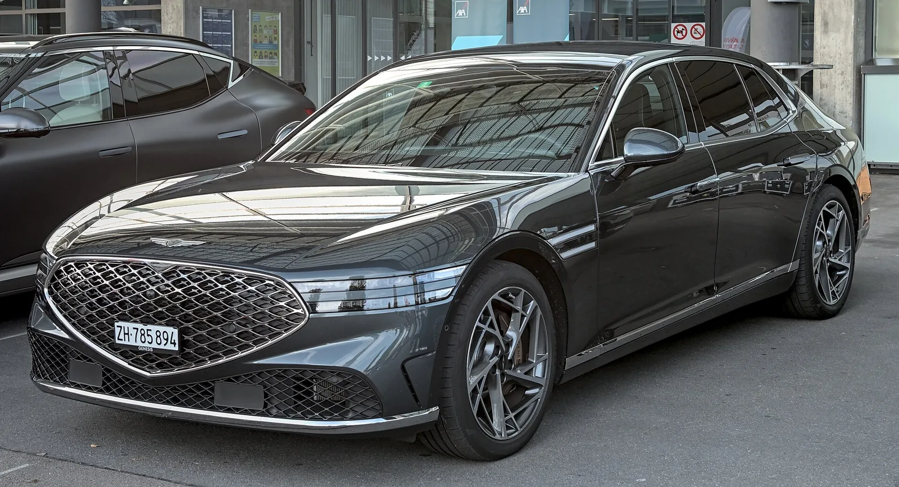
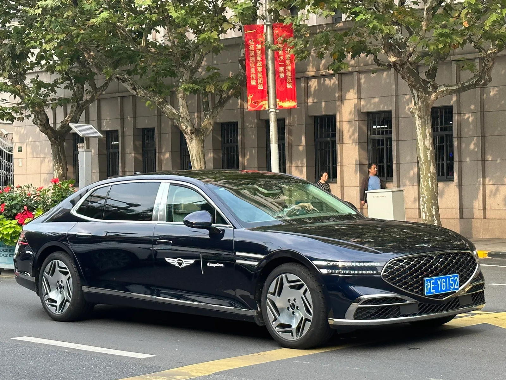
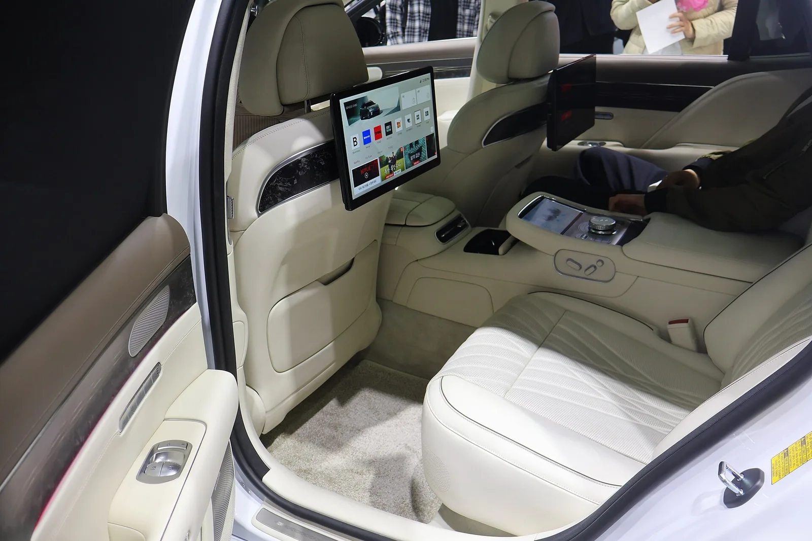
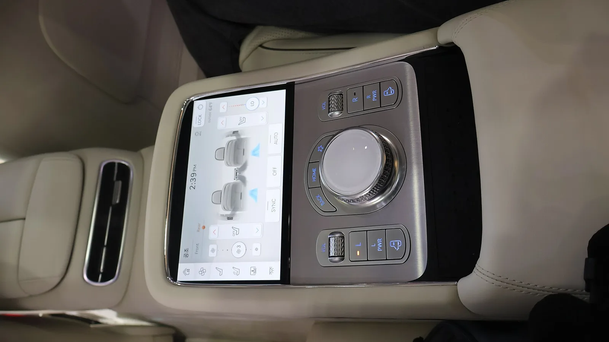

▲ 현행 G90. 부분변경 모델은 이 얼굴에서 램프 구성이 달라진다 ⓒ Wikimedia Commons
제네시스 G90 부분변경 모델이 도로에서 포착됐습니다.
앞부분은 위장막에 덮여 있지만, 두 줄 주간주행등 아래에 V자 형태의 발광 요소가 새로 자리 잡은 것이 확인됐습니다.
제네시스가 '윙 페이스'라 부르는 디자인 언어의 확장입니다. 앞서 GV90에서 본 형태와도 이어집니다.
1. 얼굴에서 무엇이 달라지나
제네시스의 상징은 두 줄 램프입니다. G90도, GV80도, GV60도 이 규칙을 지켜왔습니다.
이번에 포착된 G90 부분변경은 이 두 줄을 그대로 두면서 그 아래에 요소를 하나 더 얹었습니다. 그릴 하부를 가로지르며 가운데에서 아래로 꺾이는 V자 형태의 발광 요소입니다.
| 부위 | 변화 |
|---|---|
| 주간주행등 | 두 줄 구성 유지 |
| 그릴 하부 | V자 발광 요소 추가 — 새 요소 |
| 그릴 | 조명 기능 탑재 가능성 |
| 범퍼 | 기존 대비 매끄럽게 정리 |
| 크롬 트림 | 유지 예상 |
이 V자는 GV90에서 이미 본 형태입니다. 초대형 전기 SUV의 얼굴에 적용된 문법을 플래그십 세단으로 넓히는 흐름으로 읽힙니다.

▲ GV90의 원형인 네오룬 콘셉트. 두 줄 램프가 가운데에서 V자로 꺾인다
2. 그릴이 빛난다는 것의 의미
그릴 자체에 조명이 들어가는 방식은 최근 프리미엄 브랜드에서 확산 중입니다. 전동화 모델에서 흡기가 필요 없어지면서, 그릴이 기능 부품에서 브랜드 식별 요소로 성격을 바꾼 결과입니다.
다만 G90은 내연기관과 하이브리드가 남아 있는 모델입니다. 냉각을 위한 실제 개구부가 필요합니다. 조명이 들어가더라도 그릴 전체가 아니라 테두리나 특정 패턴 영역에 한정될 가능성이 큽니다.
국내 기준으로는 전면 발광 요소에 대한 등화 규정도 변수입니다. 주행 중 켤 수 있는 조명과 정차 시에만 켤 수 있는 조명이 구분되기 때문에, 양산 사양에서 어떻게 구현될지는 공개 이후에 확인해야 합니다.
3. 진짜 변화는 램프가 아닐 수 있다
앞선 목격에서 확인된 항목이 하나 더 있습니다. 레벨 3 자율주행입니다.
| 단계 | 운전자 역할 | 전방 주시 |
|---|---|---|
| 레벨 2 | 운전자가 항상 제어 주체 | 필수 |
| 레벨 3 | 조건 충족 시 시스템이 제어 주체 | 조건부 해제 |
| 레벨 4 | 지정 구역 내 완전 자율 | 불필요 |
레벨 2와 레벨 3 사이에는 기술 격차보다 큰 법적 격차가 있습니다. 레벨 3은 조건이 충족된 구간에서 운전 주체가 시스템으로 넘어갑니다. 사고 발생 시 책임 소재가 달라진다는 뜻입니다.
국내에는 이미 근거 규정이 있습니다. 정부는 2019년 12월 세계 최초로 레벨 3 안전기준을 제정했고, 현재는 「자동차 및 자동차부품의 성능과 기준에 관한 규칙」 제111조의3 및 별표 27에 부분 자율주행시스템의 안전기준이 규정돼 있습니다. 제작사는 시스템이 정상 작동할 수 있는 운행가능영역(ODD)을 지정해야 합니다.
다만 실제 양산차에 적용된 사례는 아직 제한적입니다. G90 부분변경이 이를 실을 경우 국산 플래그십에서 의미 있는 첫 사례가 됩니다.

▲ 현행 G90. 부분변경에서도 롱휠베이스 파생형은 이어질 전망이다
4. 언제 나오나
국내 출시는 2026년 3분기로 예상됩니다. 현재 위장막이 앞부분에 집중돼 있다는 점은 후면과 측면 변경 폭이 작다는 신호로 읽을 수 있습니다.
부분변경에서 통상 함께 손보는 항목은 다음과 같습니다.
| 항목 | 이번 G90 예상 |
|---|---|
| 전면 램프·그릴 | 변경 확인 |
| 범퍼 | 변경 확인 — 매끄럽게 정리 |
| 인포테인먼트 | 세대 교체 가능성 |
| 주행보조 | 레벨 3 추가 관측 |
| 파워트레인 | 대폭 변경 가능성 낮음 |
| 휠 디자인 | 신규 추가 가능성 |

▲ 현행 G90. 부분변경은 앞부분 변경에 집중된 것으로 보인다

▲ 현행 G90 뒷좌석. 롱휠베이스 사양의 후석 구성은 부분변경에서도 이어질 전망이다

▲ G90 실내. 부분변경에서는 인포테인먼트 세대 교체 가능성이 거론된다
5. 정리
G90 부분변경 모델이 위장막을 씌운 채 포착됐습니다. 두 줄 주간주행등은 유지하면서, 그릴 하부에 V자 형태 발광 요소가 새로 추가됐습니다. 그릴 자체에 조명이 들어갈 가능성도 제기됐습니다.
범퍼는 기존보다 매끄럽게 정리됐고, 크롬 트림은 유지될 전망입니다. 롱휠베이스 파생형과 고급 실내 구성은 이어집니다.
램프보다 중요한 변화는 레벨 3 자율주행일 수 있습니다. 앞선 목격에서 탑재가 확인됐고, 이는 사고 시 책임 소재까지 달라지는 사안입니다. 국내 출시는 2026년 3분기로 예상됩니다.